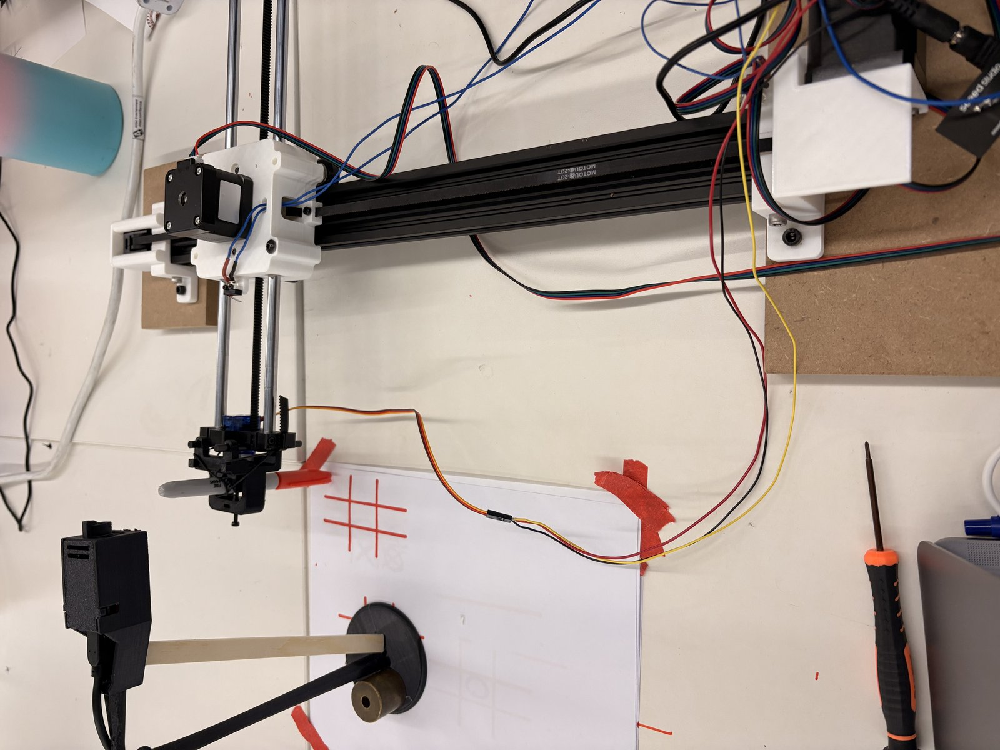
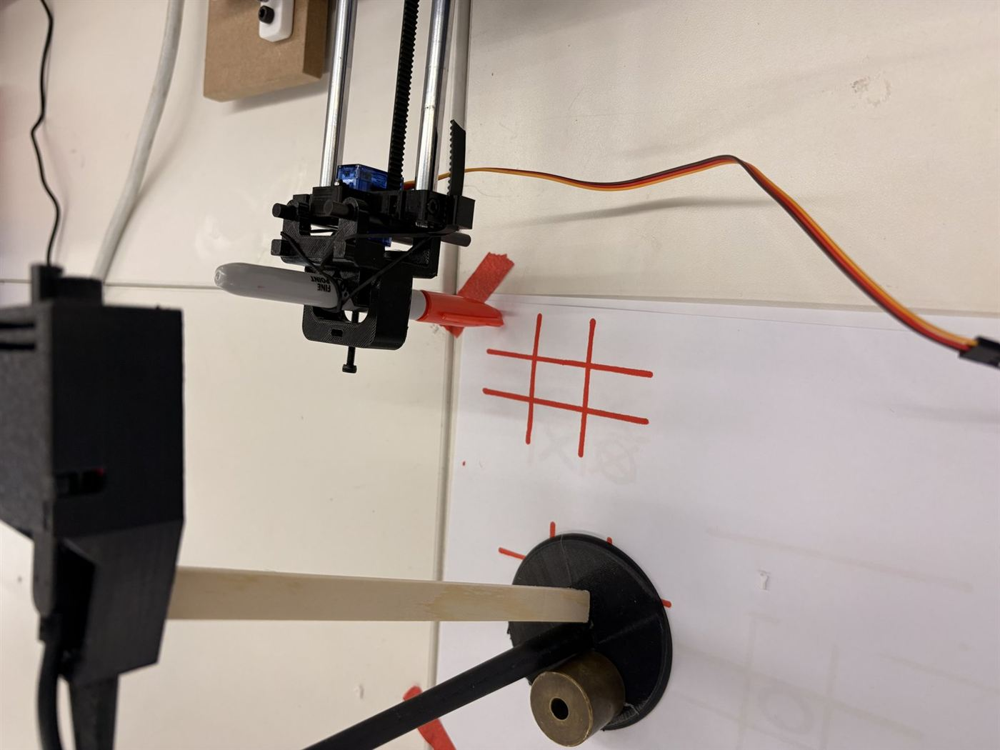
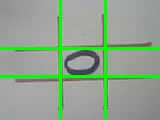

<div class="textcontainer">
<br></br>
<h3>Weeks 10–12: Machine Building — Tic-Tac-Toe Drawing Machine</h3>
<p class = "margin"></p>
This was a group project — Zaria, Eliza, Widmayer, and me. Our writeup also lives on Widmayer's site at <a href="https://wtrenteetun31.github.io/PS70/10_machine/documentation/documentation.html">wtrenteetun31.github.io/PS70/10&#95;machine/documentation/documentation.html</a>, and I'm mirroring the team writeup here so anyone landing on my page has the full context without bouncing. All of the working code lives in the team's GitHub repo: <a href="https://github.com/ElizaKnapp/machine_week">github.com/ElizaKnapp/machine&#95;week</a>.
<p class = "margin"></p>
<h4>Overview</h4>
<p class = "margin"></p>
Our goal was to make a tic-tac-toe drawing machine that plays against you and takes turns putting X's and O's on a sheet of paper. The machine uses computer vision — an ESP32-CAM mounted above the paper — to snapshot the board, figure out where the human placed their mark, and then drive a pen-plotter to draw its own response.
<p class = "margin"></p>
<p></p>
<p class="caption">The full assembly — ESP32-CAM mounted overhead in a custom 3D-printed bracket, looking down at the play surface.</p>
<p class = "margin"></p>
<p></p>
<p class="caption">Close-up of the pen carriage — marker held in a sleeve, lifted/lowered by the servo, drawing the red grid.</p>
<p class = "margin"></p>
<h4>Construction</h4>
<p class = "margin"></p>
To construct our drawing machine we followed the build-kit directions exactly, and our end effector was simply a marker. The piece that needed extra design was a custom ESP32-CAM holder so the camera could be positioned directly above the piece of paper and capture the full board in one frame — visible in the photos above.
<p class = "margin"></p>
A big issue that we ran into was with the computer vision, and getting the Python code to actually detect changes on the board. It was okay at detecting X's and not good at detecting O's at all. A second, more practical problem was about how the boards talked to each other: originally the camera sent images to the Python code over a server, and Python then sent commands to the ESP32 motor board over serial. That caused serial-monitor overloads and brownouts. We switched the architecture so the camera now talks to Python over a server <i>and</i> Python talks to the ESP32 motor board over a server, and we ran the motor ESP32 off an external power supply (instead of the laptop). Both fixes together stabilized the system.
<p class = "margin"></p>
<h4>System architecture</h4>
<p class = "margin"></p>
Three pieces cooperating:
<ul>
<li><b>Camera board (AI Thinker ESP32-CAM)</b> — eyes + brain. Has the camera, WiFi, and runs the minimax AI. Code: <code>machine&#95;week.ino</code>.</li>
<li><b>Motor board (Seeed XIAO ESP32-C3)</b> — hands. Drives the X/Y steppers (A4988 drivers) and a pen-lift servo. Code: <code>week10&#95;machine.ino</code>.</li>
<li><b>Laptop (Python Flask server, port 6000)</b> — vision. Runs the OpenCV pipeline that reads the board from a JPEG. Code: <code>detect.py</code>.</li>
</ul>
<p class = "margin"></p>
A turn, step by step:
<ol>
<li>You type <code>start</code> in the camera's serial monitor.</li>
<li>Camera tells the motor board to home, then draw the 3×3 grid on the paper.</li>
<li>You draw an X by hand in whichever cell you want.</li>
<li>You type <code>scan</code>.</li>
<li>Camera snaps a JPEG and POSTs it to <code>/detect</code> on the Python server.</li>
<li><code>detect.py</code> finds the grid lines with OpenCV morphology, crops each of the 9 cells, classifies each cell as <code>.</code>, <code>X</code>, or <code>O</code> using shape heuristics, and returns the board as JSON.</li>
<li>Camera parses the JSON, confirms exactly one new X appeared (catches vision errors), then runs minimax to pick the best O cell.</li>
<li>Camera tells the motor board to draw that O. Motor draws and replies <code>DONE</code>.</li>
<li>Camera checks for win/draw, then prompts the next turn.</li>
</ol>
<p class = "margin"></p>
<h4>Vision pipeline — what the camera actually sees</h4>
<p class = "margin"></p>
After the camera POSTs the JPEG, <code>detect.py</code>'s job is to chop it into 9 cells and decide which mark is in each. Here's the debug visualization the script can spit out — green lines are the detected grid, and you can see one cell where it's pulled out a candidate O contour:
<p class = "margin"></p>
<p></p>
<p class="caption">Debug overlay from <code>detect.py</code> — green = detected grid lines, with a candidate O contour highlighted in one cell.</p>
<p class = "margin"></p>
Here's the per-cell classifier from <code>detect.py</code> — the function that actually decides whether a given cell is empty, an X, or an O:
<p class = "margin"></p>
<pre><code class="lang-python">def _classify_cell(cell_bgr, gray_path=None):
import cv2
import numpy as np
# -------------------- preprocess --------------------
gray = cv2.cvtColor(cell_bgr, cv2.COLOR_BGR2GRAY)
blur = gray.copy()
if gray_path:
cv2.imwrite(gray_path, blur)
print(blur.min())
print(blur.max())
# -------------------- blank detection --------------------
background = np.percentile(blur, 40)
dark_ratio = np.sum(blur &lt; background - 18) / blur.size
print(background)
print(f" std={blur.std():.1f} dark_ratio={dark_ratio:.3f}")
if dark_ratio &lt; 0.02:
return "."
# -------------------- binarization --------------------
_, th = cv2.threshold(
blur, 0, 255,
cv2.THRESH_BINARY_INV + cv2.THRESH_OTSU
)
h, w = th.shape
mx = max(2, w // 8)
my = max(2, h // 8)
roi = th[my:h - my, mx:w - mx]
if roi.size == 0:
return "."
ink_ratio = np.count_nonzero(roi) / roi.size
if ink_ratio &lt; 0.10:
return "."
# =========================================================
# FIND CONTOURS
# =========================================================
contours, hierarchy = cv2.findContours(
roi,
cv2.RETR_EXTERNAL,
cv2.CHAIN_APPROX_SIMPLE
)
if not contours:
return "."
roi_h, roi_w = roi.shape
roi_area = roi_h * roi_w
good_contours = [
cnt for cnt in contours
if cv2.contourArea(cnt) &gt;= 0.08 * roi_area
]
if not good_contours:
return "."
</code></pre>
<p class = "margin"></p>
<a href="detect.py" download>Download the full detect.py</a> &nbsp;|&nbsp;
<a href="README.md" download>Download the team README.md</a>
<p class = "margin"></p>
<h4>Camera firmware (ESP32-CAM)</h4>
<p class = "margin"></p>
The camera board boots, brings up the OV2640 sensor and the WiFi link, and then waits for serial commands. Here's the setup + main loop excerpt:
<p class = "margin"></p>
<pre><code class="lang-cpp">// -------------------- Setup --------------------
void setup() {
Serial.begin(115200);
Serial.setDebugOutput(true);
Serial.println();
camera_config_t config;
config.ledc_channel = LEDC_CHANNEL_0;
config.ledc_timer = LEDC_TIMER_0;
config.pin_d0 = Y2_GPIO_NUM;
config.pin_d1 = Y3_GPIO_NUM;
config.pin_d2 = Y4_GPIO_NUM;
config.pin_d3 = Y5_GPIO_NUM;
config.pin_d4 = Y6_GPIO_NUM;
config.pin_d5 = Y7_GPIO_NUM;
config.pin_d6 = Y8_GPIO_NUM;
config.pin_d7 = Y9_GPIO_NUM;
config.pin_xclk = XCLK_GPIO_NUM;
config.pin_pclk = PCLK_GPIO_NUM;
config.pin_vsync = VSYNC_GPIO_NUM;
config.pin_href = HREF_GPIO_NUM;
config.pin_sccb_sda = SIOD_GPIO_NUM;
config.pin_sccb_scl = SIOC_GPIO_NUM;
config.pin_pwdn = PWDN_GPIO_NUM;
config.pin_reset = RESET_GPIO_NUM;
config.xclk_freq_hz = 20000000;
config.pixel_format = PIXFORMAT_JPEG;
config.frame_size = FRAMESIZE_QVGA;
config.grab_mode = CAMERA_GRAB_WHEN_EMPTY;
config.fb_location = CAMERA_FB_IN_PSRAM;
config.jpeg_quality = 12;
config.fb_count = 1;
if (psramFound()) {
config.fb_count = 2;
config.grab_mode = CAMERA_GRAB_LATEST;
config.fb_location = CAMERA_FB_IN_PSRAM;
} else {
config.fb_location = CAMERA_FB_IN_DRAM;
config.frame_size = FRAMESIZE_QVGA;
}
esp_err_t err = esp_camera_init(&amp;config);
if (err != ESP_OK) {
Serial.printf("Camera init failed: 0x%x\n", err);
while (true) delay(1000);
}
sensor_t *s = esp_camera_sensor_get();
if (s) {
s-&gt;set_brightness(s, 0);
s-&gt;set_contrast(s, 1);
s-&gt;set_saturation(s, -1);
s-&gt;set_framesize(s, FRAMESIZE_QVGA);
}
#if defined(LED_GPIO_NUM)
setupLedFlash();
#endif
WiFi.begin(ssid, password);
WiFi.setSleep(false);
Serial.print("WiFi connecting");
while (WiFi.status() != WL_CONNECTED) { delay(500); Serial.print("."); }
Serial.printf("\nConnected — IP: %s\n", WiFi.localIP().toString().c_str());
startCameraServer();
Serial.println("Ready. Type 'start' to begin a new game.");
}
// -------------------- Loop --------------------
void loop() {
// Read serial commands
static String serialBuf = "";
while (Serial.available()) {
char c = Serial.read();
if (c == '\n' || c == '\r') {
serialBuf.trim();
serialBuf.toLowerCase();
if (serialBuf == "start") {
gameRunning = false;
Serial.println("Resetting game state...");
if (postReset()) {
Serial.println("Waiting for motor to redraw the grid (replace paper now)...");
if (waitForMotorReady()) {
gameRunning = true;
Serial.println("Grid drawn. Game started — draw an O to take your turn.");
}
} else {
Serial.println("Could not reach Python server — is detect.py running?");
}
}
serialBuf = "";
} else {
serialBuf += c;
}
}
// Scan on interval only while a game is active
if (gameRunning) {
static unsigned long lastScan = 0;
unsigned long now = millis();
if (now - lastScan &gt;= SCAN_INTERVAL_MS) {
lastScan = now;
Serial.println("Scanning...");
captureAndSend();
}
}
delay(20);
}
</code></pre>
<p class = "margin"></p>
Full code for all three components (camera firmware, motor firmware, Python server) lives in the team repo: <a href="https://github.com/ElizaKnapp/machine_week">github.com/ElizaKnapp/machine&#95;week</a>.
<p class = "margin"></p>
<h4>Challenges &amp; next steps</h4>
<p class = "margin"></p>
The biggest issue we hit was getting the Python code to actually detect changes on the board. It was okay at detecting X's and not good at detecting O's at all — the contour-based shape heuristics in <code>&#95;classify&#95;cell</code> would either miss O's entirely or confuse a partly-drawn O with an X. Moving forward we'd try offloading the classification to an actual image-recognition model (a small CNN, or even just sending the cropped cell to a hosted vision API) instead of hand-tuning OpenCV thresholds.
<p class = "margin"></p>
<div class="week-nav">
<a href="../09_networking/index.html" class="week-nav-prev">
<span class="week-nav-label">← Previous</span>
<span class="week-nav-title">Week 9 — Networking</span>
</a>
<a href="../13_finalproject/index.html" class="week-nav-next">
<span class="week-nav-label">Next →</span>
<span class="week-nav-title">Week 13 — Final Project</span>
</a>
</div>
</div>